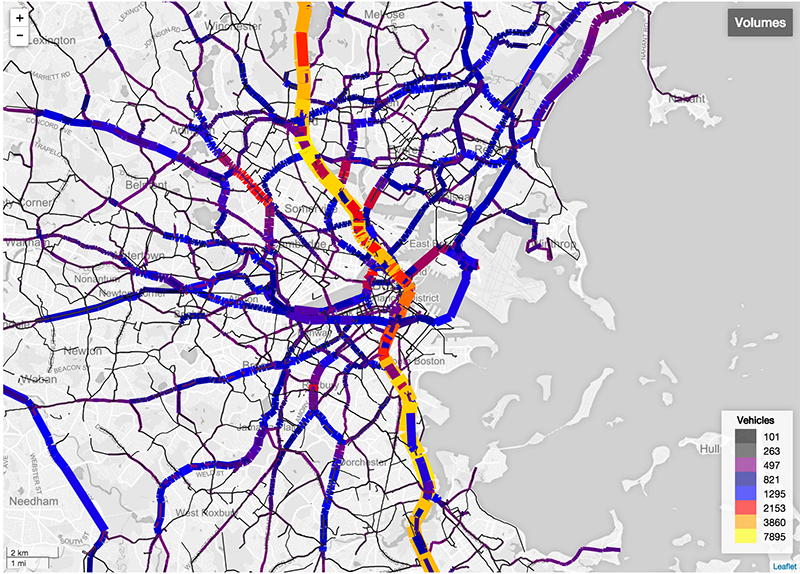

I am a transportation planner, modeler, coder, GIS expert and civic data enthusiast. I am from Seattle, WA and currently live in NYC. While attending MIT, I worked on modeling the potential impacts of climate change and inundation on the Boston Metro region. I love writing code, studying transportation, and all things geospatial.
 Click image above to visit thesis visualization site.
Abstract
The world’s leading climate scientists have reached a consensus that “[w]arming of the climate system is unequivocal” (IPCC, 2007). This warming will carry with it a host of consequences for the global community, including increased occurrence of flooding. Little focus has been placed on the operation of transport systems during, or shortly after inundation events.
Inundation affects the availability and quality of network assets (i.e. Transportation Supply) and inhabitable land, which produces and attracts transportation users (i.e. Demand). In this thesis, I apply an altered four-step transportation modeling method to allow for the analysis of impacts in a single set time: modeling an event rather than a future equilibrium scenario.
I show how traditional four-step models can be used to produce valuable metrics describing performance of the disrupted transportation system. Such metrics contribute to understanding potential consequences and planning for mitigation and response.
Using the Boston Metro Region as a case study, and a four-step model for the year 2010, I demonstrate a method (Inundation Impact Assessment) for quantifying transport network impacts under six different inundation levels, one-foot to six-feet. The results indicate that inundation has widespread impacts on the ability of persons to complete trips and the performance of both the auto and transit networks.
I then demonstrate how this method can be applied to examine different infrastructure projects in the future, modeling two different demographic scenarios for the year 2030 with two different BRT alignments. The goal is to evaluate potential contribution of BRT to recoup trips lost by the impact of inundation on other transit links.
The methods and approaches used in this work show how such four-step models can be used to plan for inundation events. This method provides significant amounts of data that can be used to assess the value of potential interventions, such as the protection of mobility or the reinforcement of transportation network performance.
Visualizing flows can be difficult. It requires knowing a lot of GIS, data processing skills and time. Furthermore, standard "desire lines" or "spider lines" with linear lines with anything more than 50 OD pairs can end up being difficult to interpret. I'm working on a web-based tool that will allow someone to upload a csv of coordinates and a csv of flows to implement a bundled flow visualization automatically. Many thanks to upphiminn for the amazing bundling algorithm.
I created a simple animated leaflet map of the NOAA Daily Snow Fall Data . The data was pulled and processed with Python, then visualized with leaflet and leaflet heatmap.